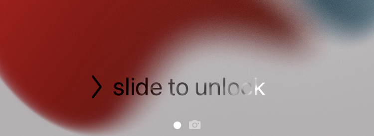
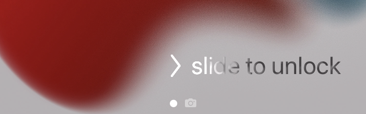

Slide to unlock is back. The shimmering slide to unlock from iOS 6 replaces "Press home to open" on the Lock Screen.


Written from scratch by John d_ie, after a request on r/jailbreak. Concept from SlideToUnlock by Nepeta and its port Slyd by s8ngyu.